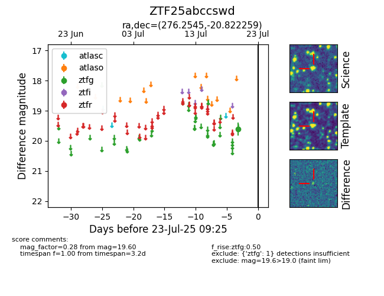

Target ZTF25abccswd at 2025-07-23 12:37, see:
FINK: fink-portal.org/ZTF25abccswd
Lasair: lasair-ztf.lsst.ac.uk/objects/ZTF25abccswd
ALeRCE: alerce.online/object/ZTF25abccswd
alt names
ZTF25abccswd (ztf,fink)
coordinates:
equatorial (ra, dec) = (276.2545,-20.82226)
galactic (l, b) = (11.4507,-3.80749)
photometry
last ztfg=19.60
1 ztfg detections
